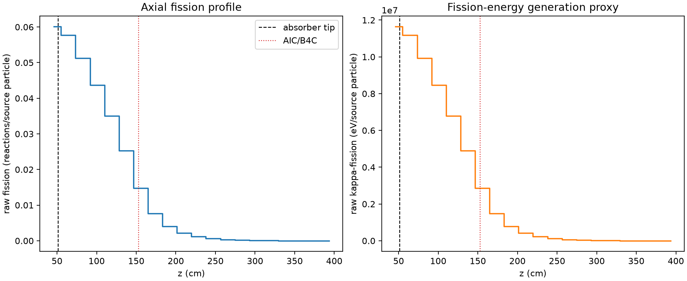
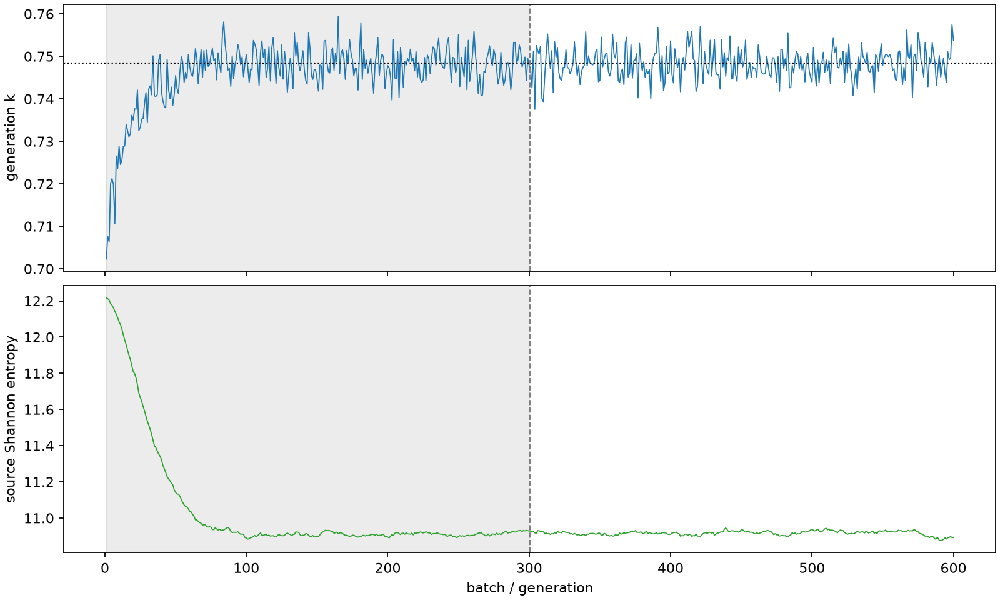

| field | value |
|---|---|
| experiment | V2-ADAPTIVE_01-0001 |
| k | 0.7484043272200358 |
| MC standard error | 0.0001657374960938966 |
| seconds | 988.322468525992 |
| acceptance | not_assessed |
| convergence | review_required |
Completed is output integrity only; physical and statistical review required. Zero tallies do not prove zero production or zero uncertainty.
| diagnostic | value |
|---|---|
| geometric fuel voxels | 5280 |
| zero fission tally voxels | 0 |
| low signal fuel voxels | 1044 |
| low signal fission share | 0.00021181485358828708 |
| low signal kappa share | 0.00021183078977021614 |
| important fission share | 0.9500222132467991 |
| previous filter included | 4236 |
| duration estimate s | 1562.5173488400023 |
| actual minus estimate s | -574.1948803140103 |
| fission relative MC error | statistics |
|---|---|
| all_geometric_fuel | {"voxels": 5280, "positive_mean_voxels": 5280, "zero_mean_voxels": 0, "undefined_relative_error_voxels": 0, "median": 0.0354494118081044, "p95": 0.5273756905205172, "maximum": 0.9920148410973453} |
| low_signal | {"voxels": 1044, "positive_mean_voxels": 1044, "zero_mean_voxels": 0, "undefined_relative_error_voxels": 0, "median": 0.3730154934950315, "p95": 0.7945272469565957, "maximum": 0.9920148410973453} |
| important_95pct | {"voxels": 1880, "positive_mean_voxels": 1880, "zero_mean_voxels": 0, "undefined_relative_error_voxels": 0, "median": 0.007000260280619858, "p95": 0.012396106940793482, "maximum": 0.018030091690209554} |
| outside_previous_filter | {"voxels": 1044, "positive_mean_voxels": 1044, "zero_mean_voxels": 0, "undefined_relative_error_voxels": 0, "median": 0.3730154934950315, "p95": 0.7945272469565957, "maximum": 0.9920148410973453} |
| kappa_fission relative MC error | statistics |
|---|---|
| all_geometric_fuel | {"voxels": 5280, "positive_mean_voxels": 5280, "zero_mean_voxels": 0, "undefined_relative_error_voxels": 0, "median": 0.03537584835560738, "p95": 0.5270674075975347, "maximum": 0.9920037266027316} |
| low_signal | {"voxels": 1044, "positive_mean_voxels": 1044, "zero_mean_voxels": 0, "undefined_relative_error_voxels": 0, "median": 0.3720229610503344, "p95": 0.7922560114278894, "maximum": 0.9920037266027316} |
| important_95pct | {"voxels": 1880, "positive_mean_voxels": 1880, "zero_mean_voxels": 0, "undefined_relative_error_voxels": 0, "median": 0.006986723287463821, "p95": 0.012373168777046306, "maximum": 0.018004144955847415} |
| outside_previous_filter | {"voxels": 1044, "positive_mean_voxels": 1044, "zero_mean_voxels": 0, "undefined_relative_error_voxels": 0, "median": 0.3720229610503344, "p95": 0.7922560114278894, "maximum": 0.9920037266027316} |
| axial bin | fission share | kappa-fission share |
|---|---|---|
| 1 | 0.19752571715869022 | 0.19748558161076968 |
| 2 | 0.18984224695476137 | 0.18984907959162237 |
| 3 | 0.16844911256009606 | 0.1684555132081212 |
| 4 | 0.1434824829193841 | 0.14348819708005953 |
| 5 | 0.11506402818493326 | 0.11506855339400263 |
| 6 | 0.08325010241789255 | 0.08325354827662998 |
| 7 | 0.048424820539691944 | 0.0484296649117275 |
| 8 | 0.025048904794013463 | 0.025052844612086757 |
| 9 | 0.01326173099435195 | 0.013263910496082545 |
| 10 | 0.007162008383980211 | 0.0071630309277723 |
| 11 | 0.003856654280581307 | 0.0038571613467360626 |
| 12 | 0.002040322589825102 | 0.002040650384799454 |
| 13 | 0.001117087984404391 | 0.0011172837146209127 |
| 14 | 0.0006598489834674219 | 0.0006599578172507952 |
| 15 | 0.00039973590906370904 | 0.0003997622405712415 |
| 16 | 0.0002115063584061942 | 0.00021155172021154972 |
| 17 | 0.00011646465934052127 | 0.0001164794769855883 |
| 18 | 5.601427644721012e-05 | 5.602118772499433e-05 |
| 19 | 2.412264357088036e-05 | 2.4118067182256803e-05 |
| 20 | 7.0874070981087466e-06 | 7.0899350427283005e-06 |
Histories include the inactive-to-active transition at batch 300. kappa-fission approximates fission energy production, not total heat deposition.

